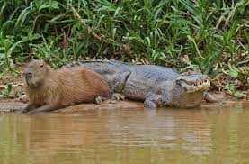
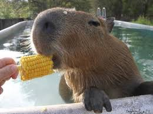
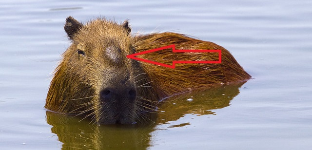
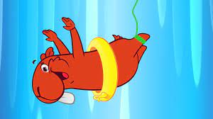

Natureza
Bioma
Elas são muito adaptáveis e podem ser encontradas em diversos biomas do Brasil (mas principalmente na Floresta Amazônica e no Pantanal), desde que haja acesso a fontes de água. São conhecidas por sua capacidade de se adaptar a diferentes ambientes aquáticos e terrestres.
Elas são animais semi aquáticos e passam grande parte do tempo em corpos hídricos, como rios, lagos e lagoas. A água ajuda a resfriar seus corpos, pois conduz o calor mais eficientemente do que o ar. Elas podem se submergir parcialmente ou totalmente na água para dissipar o calor corporal.
As capivaras obtêm a maior parte da água de que precisam através da ingestão de água potável, vivem em locais onde podem beber água regularmente para se hidratarem.
Alimentação
A alimentação das capivaras consiste em vegetação aquática e terrestre, o que ajuda a suprir suas necessidades de hidratação. Muito importante em regiões onde a disponibilidade de água doce é limitada.
As capivaras são herbívoras e se alimentam de gramíneas, folhas, frutos e cascas de árvores. Elas também podem comer arroz, milho e feijão, mas não são muito fãs deles. Por isso, é comum que elas invadam plantações para comer as plantas.
Fisiologia
Sistemas
Sistema Respiratório
Sistema Circulatório
Sistema Nervoso
Possuem um sistema respiratório pulmonar. Elas têm pulmões bem desenvolvidos que lhes permitem respirar ar atmosférico e quando estão na água, podem prender a respiração por até cinco minutos.
As capivaras têm um sistema circulatório semelhante ao de outros mamíferos onde o coração é um órgão muscular que bombeia o sangue para todo o corpo, e possuem quatro cavidades: dois átrios (átrio direito e átrio esquerdo) e dois ventrículos (ventrículo direito e ventrículo esquerdo).
O sistema nervoso das capivaras, inclui um cérebro relativamente desenvolvido, que lhes permite perceber o ambiente e reagir a estímulos (uma curiosidade sobre as capivaras é que elas têm uma excelente visão e audição, o que as ajuda a detectar predadores em potencial).
Adapção
Por serem animais pacíficos as capivaras na maioria das vezes vão evitar confrontos com predadores, fazendo o necessário para sua defesa, mas principalmente fugir e se esconder se suas presas, sendo na “floresta” ou nos rios e lagos, já que são excelentes nadadoras. Um ponto interessante sobre as capivaras, é que elas são capazes de fazer uma comunicação sonora, quando percebem uma ameaça, fazem sons altos para alertar o grupo e alertar sobre o perigo.
Reprodução
Se reproduzem sexualmente como a maioria dos mamíferos. Não há uma época para a reprodução, mas geralmente ocorre durante a estação chuvosa ou em períodos de maior disponibilidade de alimentos. Ocorre também uma disputa entre os machos para estabelecer uma hierarquia e os machos podem também esfregar suas glândulas odoríferas em plantas pela região para “comunicar” seu estado reprodutivo.

Curiosidades
Diferenças entre Macho e Fêmea
Para diferenciar com segurança o sexo das capivaras, o observador deve-se aproximar do animal e observar na parte superior da cabeça, onde se encontra uma proeminência glandular de coloração escura e totalmente desprovida de pelos, ambos os sexos possuem esta glândula, porém a do macho é maior. Esta glândula produz um líquido de cheiro característico que estimula as fêmeas sexualmente, além de servir para demarcar territórios. Os machos esfregam sua cabeça em troncos de árvores e demarcam seus espaços.
Personagem
Também há um desenho animado infantil educativo chamado “Capivara Vera”
Banho de Lama
As capivaras frequentemente se revolvem na lama, o que pode ajudar a resfriar seus corpos, pois a evaporação da água da lama tem um efeito de resfriamento.